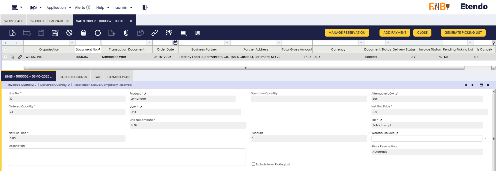

Gestión avanzada de almacén
Paquete Java: com.etendoerp.advanced.warehouse.management
Visión general
El módulo Advanced Warehouse Management amplía las capacidades estándar de Etendo para ofrecer una gestión de inventario integral, flexible y automatizada, añadiendo integración con dispositivos móviles. Cada acción realizada desde Etendo Mobile se sincroniza automáticamente con Etendo, garantizando una trazabilidad completa y actualizaciones coherentes en las ventanas correspondientes del sistema.
Este módulo permite al usuario:
- Gestionar el inventario en múltiples estados predefinidos y personalizados.
- Realizar ajustes de existencias e inventarios físicos desde dispositivos móviles.
- Automatizar reubicaciones y estados mediante reglas de movimiento.
- Integrar la trazabilidad mediante códigos de barras, que pueden escanearse desde Etendo Mobile.
- Ampliar y optimizar el proceso manual de picking y packing, incorporando la posibilidad de ejecutarlos desde Etendo Mobile.
Configuración inicial
Para empezar a utilizar este módulo correctamente, deben completarse los siguientes pasos de instalación y configuración:
- Instalar el bundle Warehouse Extensions.
- Instalar la app Etendo Mobile.
- Habilitar la Advanced Warehouse App para los roles de usuario que la utilicen.
- Instalar datasets.
- Configurar los parámetros clave en la ventana Advanced Warehouse Configuration.
- Deben crearse los tipos de tarea necesarios para picking y packing.
- Debe definirse la opción de generación de picking a nivel de Pedido de venta.
Pasos a seguir:
-
Instale el módulo Advanced Warehouse Management, parte de Warehouse Extensions Bundle.
Info
Para poder incluir esta funcionalidad, debe instalarse el Warehouse Extensions Bundle. Para ello, siga las instrucciones del marketplace: Warehouse Extensions Bundle. Para más información sobre las versiones disponibles, compatibilidad con el core y nuevas funcionalidades, visite Warehouse Extensions - Notas de la versión.
-
Instale Etendo Mobile en un dispositivo Android o iOS y siga los pasos de configuración inicial. Para ello, siga las instrucciones en Primeros pasos - Etendo Mobile
Tip
Asegúrese de seguir todos los pasos para habilitar la Advanced Warehouse App.
-
Instalar datasets
Aplicación>Configuración General>Organización>Gestión del módulo de EmpresaDesde la ventana Gestión del módulo de Empresa es necesario para todos los roles que vayan a utilizar esta funcionalidad.
Estos datos de referencia incluyen configuraciones necesarias para utilizar estos módulos.
Warehouse PackingWarehouse Picking ListAdvanced Warehouse ManagementEtendo Print ProviderStock Logistic Unit

-
Ventana Advanced Warehouse Configuration
Aplicación>Gestión de Almacén>Configuración>Advanced Warehouse ConfigurationAntes de utilizar el módulo, en la ventana
Advanced Warehouse Configuration, debe configurar las variables clave que definen cómo se gestionan las operaciones de inventario para cada organización.Warning
Es obligatorio crear una configuración para la organización con la que esté trabajando.

Campos a tener en cuenta:
Cabecera
- Organización: permite gestionar a qué organización se aplicará la configuración.
- Almacén: es un campo no obligatorio que puede utilizarse para aplicar la configuración a un almacén específico o a todos los almacenes de la organización.
- Activo: se marca o desmarca para habilitar o deshabilitar la configuración.
-
Configuración de código de barras
-
Algoritmo de código de barras: el algoritmo de código de barras por defecto que permite la interpretación según cualquiera de los estándares definidos por organizaciones internacionales. Las opciones a seleccionar son:
- GS1-128
- SimpleBarcode
-
Configuración de componentes de código de barras: conjunto de identificadores de aplicación definidos por estándares del sector y utilizados en códigos de barras. Estos identificadores permiten al sistema distinguir diferentes tipos de información, ya que cada AI especifica el tipo de dato que le sigue, como identificadores de producto, números de lote, fechas de caducidad o cantidades.
Este campo es obligatorio cuando se selecciona uno de los algoritmos por defecto del módulo (GS1-128 o Simple Barcode). Para algoritmos personalizados definidos por el usuario, este campo puede dejarse en blanco; sin embargo, el sistema mostrará un mensaje de advertencia si permanece vacío. En todos los casos, la configuración de AI es editable.
-
Solapa Preferencias
Esta solapa permite crear, editar y eliminar registros de preferencias. Los registros heredan automáticamente el Cliente y la Organización de la cabecera, y estos campos no son editables. Los campos de la solapa replican los disponibles actualmente en la ventana
Configuración General>Aplicación>Preferencias.Opciones como Buscar código de barras relacionado, Picking – Validación exacta de atributos, y las preferencias para Habilitar reservas de existencias y Habilitar gestión de unidades de medida pueden gestionarse como preferencias directamente desde esta solapa.
Tabla de preferencias
La siguiente tabla resume las preferencias clave disponibles en la configuración avanzada de almacén:
Nombre de preferencia Descripción Opciones Valor por defecto Picking – Validación exacta de atributos Define el nivel de validación aplicado durante el proceso de picking. Y: Requiere coincidencia exacta entre el código escaneado y la lista de picking (producto, atributos y hueco).
N: Valida solo el producto, sin coincidencia estricta de atributos ni de hueco.Y Buscar código de barras relacionado Permite a Etendo buscar un producto utilizando múltiples códigos de barras. N: Busca solo el código de barras principal en el campo UPC/EAN del producto.
Y: Busca tanto el código de barras principal como todos los códigos de barras adicionales en la solapa Código de barras.N Habilitar reservas de existencias Habilita o deshabilita la funcionalidad de reserva de existencias. Y: Activa las reservas de existencias.
N: Desactiva las reservas de existencias.N Habilitar gestión de unidades de medida Habilita o deshabilita la gestión de unidades alternativas de medida. Y: Activa la funcionalidad de AUOM.
N: Desactiva la funcionalidad de AUOM.N Crear tareas de almacén Habilita la generación automática de tareas de almacén (p. ej., tareas de picking) durante la creación de la lista de picking. Cuando está deshabilitado, las tareas no se generan automáticamente y la asignación no está disponible. Y: Genera automáticamente tareas de almacén.
N: No genera tareas automáticamente.Y Días desde la fecha completada de la tarea Define cuántos días hacia atrás desde la fecha actual muestra Etendo Mobile las tareas con estado Completada. Valor numérico que representa el número de días. 1 -
Ventana Barcode Components Configuration
Aplicación>Gestión de Almacén>Configuración>Barcode Components ConfigurationEsta ventana forma parte de los ajustes avanzados de código de barras del sistema Etendo y se utiliza para gestionar y configurar diferentes tipos de códigos de barras. Permite al sistema leer y asociar los códigos escaneados con los productos y su información relevante.
Permite a los usuarios definir, configurar y aplicar sus propios identificadores para que el sistema pueda leer y asociar diferentes atributos de producto, como color, tipo de embalaje, lote o cualquier otro dato relevante, directamente desde los códigos GS1-128 utilizados en operaciones logísticas.
Tip
Las configuraciones que se muestran a continuación están predefinidas en el dataset inicial, aunque pueden modificarse o pueden añadirse nuevos esquemas o tipos de código de barras.

Note
El sistema permite configurar libremente cualquier identificador de aplicación (AI) para asociarlo a atributos o campos personalizados, proporcionando flexibilidad para adaptarse a diferentes esquemas internos de codificación. El módulo se instala con una configuración predefinida basada en el estándar GS1-128, lo que garantiza la correcta interpretación de los códigos conforme a estándares internacionales. No obstante, los usuarios pueden ajustar o redefinir los identificadores según sus necesidades particulares. En tales casos, el sistema interpretará los códigos según la configuración definida por el usuario, pero no interpretará los códigos GS1-128 de la forma estándar.
Campos a tener en cuenta:
Cabecera
- Nombre: nombre descriptivo de la configuración de código de barras para identificarla fácilmente.
- Descripción: detalles adicionales sobre el propósito o alcance de esta configuración.
- Separador: carácter utilizado para delimitar campos de longitud variable en el código, normalmente FNC1.
- Aplicar a todos los separadores: casilla de verificación. Si está marcada (Sí), el separador configurado se añade al final de cada identificador — tanto los AI de longitud fija como los de longitud variable deben terminar con el separador. Si está desmarcada (No), el separador se aplica solo a los identificadores de longitud variable.
Solapa Líneas de componentes de código de barras
- AI: código de Identificador de Aplicación definido por GS1 (p. ej., 01 para GTIN, 17 para fecha de caducidad).
- Descripción: explicación de la información que representa el AI (p. ej., identificador de producto, número de lote).
- Longitud fija: indica si la longitud del dato es siempre fija según el estándar GS1 para ese AI.
- Longitud: (Obligatorio) número esperado de caracteres para AI de longitud fija, o longitud máxima para AI de longitud variable.
- Prioridad: define el orden de lectura cuando hay múltiples identificadores presentes, asegurando que el sistema interprete el código de barras correctamente.
-
Entidad: selector de tipo de entidad. Las opciones son: Atributo, Hueco, Línea de pedido, Línea de inventario físico, Producto, Inventario de referencia, Línea de envío/recepción.
Si se selecciona Producto, se habilitan opciones rápidas por defecto mediante casillas de verificación para definir Lote, Número de serie o F. caducidad. Además, puede definirse un valor desde el Campo de entidad, que lista los diferentes atributos disponibles para el producto. Cada una de estas opciones es única y no puede combinarse con las demás.
- Campo de entidad: selector de campos disponibles para la entidad seleccionada para asignar el valor del código de barras. Las opciones dependen de lo introducido en Entidad.
- Lote: marque para indicar que el atributo es de tipo lote.
- Nº de serie: marque para indicar que el atributo es de tipo número de serie.
- F. caducidad: marque para indicar que el atributo es de tipo fecha de caducidad.
Por defecto, al instalar el dataset, el módulo incluye dos métodos principales para el reconocimiento de códigos:
El estándar GS1-128 es un formato de código de barras utilizado globalmente que codifica información estructurada mediante Identificadores de Aplicación (AIs). Cada AI especifica el tipo de dato incluido, como identificadores de producto, números de lote, fechas de caducidad o detalles logísticos. Esto permite una interpretación detallada y estandarizada de la información de producto y almacén. Para más detalles, consulte la documentación oficial de GS1-128.
Info
Tal como se indica en el estándar, al utilizar un identificador de longitud variable debe añadirse un separador. El valor declarado por el estándar es FNC1
Esta configuración permite el reconocimiento de diferentes Identificadores de Aplicación (AIs) utilizados en procesos de almacén. Los principales códigos implementados son:
Código AI Descripción Detalles Tipo de longitud (01) GTIN (Global Trade Item Number) Identifica globalmente un producto comercial mediante un código de 14 dígitos. Longitud fija (10) Número de lote Garantiza la trazabilidad en procesos de fabricación y distribución. Longitud variable (17) Fecha de caducidad Indica la fecha de caducidad del producto en formato YYMMDD. Longitud fija (21) Número de serie Número de serie único de un artículo. Longitud variable (91) Código de hueco Identifica la ubicación específica dentro del almacén. Longitud variable (92) Unidad logística Identifica una unidad logística, como un palé o una caja. Longitud variable (93) Uso libre - - (94) Uso libre - - (95) Uso libre - - (96) Uso libre - - (97) Uso libre - - (98) Uso libre - - (99) Uso libre - - Gracias a esta configuración, al escanear un código de barras GS1-128, se interpreta la información relevante y se aplica al proceso en curso (recepción, picking, packing). Por ejemplo, cuando lee un identificador 91, lo asocia a un hueco, o cuando lee un identificador 92, lo asocia a una unidad logística.
Reglas de identificación de códigos de barras
Etendo interpreta únicamente los identificadores definidos en esta configuración. Los identificadores GS1-128 90–99 son códigos de uso libre y pueden asignarse a atributos de producto personalizados.
Por defecto:
- AI 91 y 92 son utilizados por Etendo.
- AI 93–99 permanecen disponibles para atributos de producto personalizados que se resuelven dinámicamente (p. ej., 93 = color, 94 = talla).
Los usuarios pueden cambiar tanto los identificadores como los atributos a los que hacen referencia. Sin embargo, cualquier cambio es responsabilidad del usuario y puede causar inconsistencias con el parseo estándar de GS1-128 o con integraciones externas.
Si se requiere una interpretación diferente, un desarrollador puede crear un algoritmo de código de barras personalizado.

Ejemplo: configuración de entidad de producto personalizada Restricciones y validaciones de configuración
- Al crear o modificar identificadores (AI), el sistema aplica una serie de validaciones diseñadas para mantener la consistencia y unicidad de las configuraciones.
- Cada AI debe ser único. No puede haber más de un registro con el mismo número de AI, independientemente de la entidad o del campo asociado.
- Cuando un AI se asocia a un tipo específico de información como Lote, F. caducidad o Número de serie, ese tipo no puede repetirse dentro de la misma configuración.
- El sistema permite la inclusión de atributos personalizados en códigos de barras. Durante el escaneo, estos atributos se interpretan dinámicamente como identificadores adicionales de producto, junto con los valores estándar, permitiendo la validación y distinción de un producto único.
Este método permite al sistema leer el código y compararlo exactamente con los códigos de los productos almacenados en el sistema. La comparación es directa y estricta, sin tener en cuenta ninguna estructura adicional en el código.

-
Infraestructura de Mantenimiento:
El módulo Mantenimiento, instalado automáticamente como dependencia, gestiona eventos y desencadena la creación de tareas y acciones tras cambios dinámicos, habilitando la automatización de flujos de trabajo.
En concreto, se utiliza al crear una lista de picking.
Obligatorio
Un desarrollador debe completar la configuración inicial descrita en Mantenimiento - Configuración inicial para utilizar este módulo.
Cuando se instala el módulo Advanced Warehouse Management, los Tipos de tarea necesarios para picking y packing desde Etendo Mobile se incluyen por defecto:

Algoritmo de usuario
Cada Tipo de tarea permite seleccionar el algoritmo de asignación del operario de almacén. Por defecto, se utiliza el algoritmo Round-Robin.
Preferencias del sistema
Las preferencias
Create Warehouse TaskyTask From Date Completed Days, disponibles en la solapa Preferencias, se relacionan con la funcionalidad de tareas:Create Warehouse Taskhabilita la creación automática de tareas cuando se completa un picking, yTask From Date Completed Daysdefine el número de días por defecto para mostrar tareas completadas.Configuración de datos maestros
Creación de estados de inventario
Aplicación > Gestión de Almacén > Configuración > Estado de Inventario
Los estados de inventario permiten al usuario clasificar y gestionar las unidades de stock según su condición o disponibilidad operativa. El sistema incluye algunos estados predefinidos (como Bloqueado, Dañado, En control de calidad, etc.), pero es posible crear nuevos estados personalizados como Administrador del sistema según las necesidades del cliente.
Info
Para más información sobre cómo configurar los estados de inventario, visite Estado de Inventario.
El nuevo estado estará disponible en Etendo Mobile para asignarse a huecos nuevos o existentes mediante las opciones de Mantenimiento Ajustar o Reubicar. En este último caso, se utilizan las reglas definidas en la ventana Configuración de reglas de movimiento, descrita a continuación.
Ventana Configuración de reglas de movimiento
Aplicación > Gestión de Almacén > Configuración > Configuración de reglas de movimiento
Las reglas de movimiento permiten automatizar la reubicación o el cambio de estado del inventario en función de la acción que se esté realizando. El objetivo de esta funcionalidad es automatizar los movimientos de inventario cuando cambian de estado, excluir determinadas ubicaciones de operaciones como el picking o las reservas debido a su estado, evitar errores en la manipulación de productos, gestionar productos especiales (Dañado, Bloqueado, etc.) y gestionar automáticamente ubicaciones virtuales cuando no existe un destino definido.
Un Hueco virtual es una ubicación generada automáticamente por el sistema para mantener correctamente el inventario, incluso cuando no se ha definido una ubicación específica para el estado al que se está moviendo.
Example
Si el estado Disponible no tiene un hueco asociado, y un usuario marca un producto como Dañado, entonces el sistema crea una ubicación virtual en la que depositar el inventario afectado. Esta ubicación virtual hereda las propiedades del hueco donde se encontraba el producto y se asocia exclusivamente al nuevo estado (p. ej., Disponible).
Esto permite al usuario mantener la trazabilidad y la consistencia del inventario, incluso si el equipo aún no ha definido todas las ubicaciones físicas. También agiliza las operaciones al evitar errores o bloqueos al trabajar con estados excepcionales.
La aplicación de estas reglas puede verse desde dos funcionalidades de Etendo Mobile:
-
Desde las tareas Reubicar, una vez que haya seleccionado la ubicación definida en una regla, esto moverá el inventario a la nueva ubicación y, según la regla configurada, cambiará el estado del inventario.
-
Desde las tareas Ajustar, cuando seleccione el nuevo estado, esto actualizará el estado y, en función de la regla configurada, moverá el inventario a la ubicación definida.

Campos a tener en cuenta:
- Desde el localizador: ubicación de origen.
- Hasta el localizador: ubicación de destino.
- A estado: estado al que se transferirá el inventario cuando se realice el movimiento.
Note
Si el campo A estado se rellena primero, el campo Hasta el localizador se limitará a los Huecos que tengan asignado ese estado.
Info
Las acciones realizadas mediante reglas de movimiento impactan tanto en Etendo Mobile como en el Informe Stock de Etendo, reflejando la ubicación.
Código de barras
La funcionalidad de código de barras es clave para las operaciones logísticas. Los huecos y los productos con códigos generados estarán disponibles para ser escaneados y gestionados tanto desde Etendo Mobile como desde Etendo, pero requiere una configuración previa.
- Debe cargarse el conjunto de datos
Advanced Warehouse Management. - Desde la ventana Configuración avanzada de almacén, puede definir qué código de barras se utilizará por defecto.
Es posible generar estos códigos únicos para los huecos en las ventanas Almacén y huecos y Producto:
- Seleccione el Almacén y hueco.
-
Haga clic en Generar código de barras y confirme con Hecho.
-
El código generado se muestra en el hueco en el campo Código de barras. También puede cargarse manualmente o modificarse.
-
Por otro lado, puede obtener una impresión del código de barras generado haciendo clic en el botón Generar imprimible. Debe seleccionar un proveedor, la impresora y el número de copias.
{kind=link}
{kind=link}
{kind=link}
Info
Para utilizar la opción de impresión, debe tener el módulo Print Provider. Para más detalles, consulte Print Provider
-
Seleccione el producto.
-
Haga clic en Generar código de barras y confirme con Hecho.
-
El código generado se muestra en la cabecera de la ventana de producto en el campo UPC/EAN. También puede cargarse manualmente o modificarse.
-
Puede obtener una impresión del código de barras generado haciendo clic en el botón Generar imprimible. Debe seleccionar un proveedor, la impresora y el número de copias.
Info
Para utilizar la opción de impresión, debe tener el módulo Print Provider. Para más detalles, consulte Print Provider
{kind=link}
{kind=link}
Info
En la ventana Producto, existe una solapa llamada Código de barras, donde se listan varios códigos de barras asociados al producto, como los códigos de proveedor. Estos códigos se cargan manualmente, permitiendo especificar el algoritmo utilizado para cifrar el código y la configuración del Identificador de aplicación.
Para configurar cómo el sistema busca códigos de barras:
- En la ventana Configuración avanzada de almacén, existe una casilla de verificación denominada
Buscar código de barras relacionado - Si la casilla está habilitada, al escanear un producto desde Etendo Mobile, el sistema buscará coincidencias en todos los códigos listados en la solapa Código de barras, además del código de la cabecera.
Recepción de entrada
Visión general
La funcionalidad de Inventario referenciado (RI) se ha ampliado para gestionar unidades logísticas físicas como palés y cajas, vinculadas directamente a las Unidades alternativas de medida (AUOM) de cada producto. Esto permite definir equivalencias (p. ej., 1 Palé = 100 unidades) y gestionar estas unidades como entidades únicas y trazables en las operaciones de almacén.
El módulo Stock Logistic Unit, instalado como dependencia, añade nuevas unidades (Caja, Palé) y tipos de inventario referenciado, permitiendo a los usuarios configurar equivalencias en la solapa Unidad Alternativa de la ventana Producto. Una vez definidas, si se requiere una conversión diferente, debe crearse una nueva AUOM.
Cuando se reciben mercancías, el sistema puede generar automáticamente registros de RI para cada unidad logística (Caja o Palé), incluyendo los detalles del producto, la cantidad en unidad base y atributos como lote o fecha de caducidad. Cada unidad se registra como un elemento único desde el momento en que entra en el almacén, garantizando una trazabilidad completa.
Info
Para una configuración y uso detallados de las unidades logísticas, consulte la documentación de Stock Logistic Unit.
Ventana Recepción de entrada
Aplicación > Gestión de Compras > Transacción > Recepción de entrada
La ventana Recepción de entrada mejora el flujo de Albarán (Proveedor) introduciendo un paso intermedio entre el pedido de compra y el albarán. Este paso centraliza múltiples pedidos —incluso de distintos proveedores— en una única operación, mejorando la flexibilidad, la automatización y el control. También admite unidades alternativas de medida (AUOM), permitiendo registrar recepciones en palés, cajas o reagruparlas en distintos contenedores para reflejar la entrada real.
Las recepciones siempre se crean a partir de pedidos de compra, no manualmente. Las líneas del pedido se cargan con los detalles de producto, cantidad, lote y ubicación, que pueden ajustarse (p. ej., cantidad o unidad) para registrar recepciones parciales o alternativas. Esto garantiza que el albarán refleje con precisión lo recibido físicamente y actualice el pedido de compra en consecuencia.
Cuando se utilizan AUOM como Palé o Caja, el sistema puede generar automáticamente un registro de Inventario referenciado (RI) vinculado a la línea de recepción, representando la unidad logística y garantizando la trazabilidad.

Campos a tener en cuenta:
Cabecera
- Organización: Define la organización en la que se creará la recepción de entrada y filtra la información.
- Tipo de documento: Se carga por defecto con Recepción de entrada para clasificar el tipo de documento.
- Nº de documento: Identificador único generado automáticamente para la recepción, con una secuencia específica para este tipo de documento.
- Fecha del movimiento: Fecha en la que se registra el movimiento físico de mercancías. Por defecto, es la fecha actual.
- Descripción: Campo de texto libre para añadir información adicional o notas sobre la recepción.
Solapa Líneas
La solapa Líneas permite añadir y modificar productos individuales de uno o varios pedidos de compra, ajustando su cantidad y/o unidad. Representa la lista de productos recibidos, mostrando los siguientes campos además de los básicos.
{kind=link}
Campos a tener en cuenta:
- Nivel: Número secuencial asignado automáticamente para identificar la línea dentro de la recepción.
- Producto: El producto que se está recibiendo, vinculado al pedido de compra.
- Cantidad Operativa: Cantidad recibida expresada en la unidad alternativa de medida del producto. Coincide con Cant. pedido si no hay AUOM definida. Si existe una AUOM, indica el número de palés, cajas u otras unidades alternativas recibidas.
- Unidad Alternativa: Unidad alternativa de medida del producto. Si no hay AUOM definida, por defecto toma la Unidad. Se utiliza para registrar la recepción de productos en palés, cajas u otros contenedores.
- Cant. pedido: Cantidad recibida expresada en la unidad base de medida del producto.
- Unidad: Unidad base de medida del producto (p. ej., unidades, litros, kilogramos).
- Valor atributos: Atributos asociados al producto, como lote, número de serie o fecha de caducidad.
- Hueco: Ubicación donde se almacenará el producto recibido. Puede variar entre líneas, permitiendo asignar distintas ubicaciones a productos del mismo o de diferentes pedidos de compra.
- Línea de pedido de compra: Referencia a la línea original del pedido de compra desde la que se generó la línea de recepción.
- Agrupado por: Identificador de la agrupación a la que pertenece la línea, generado al usar el botón Agrupar por. Muestra qué líneas forman parte del mismo contenedor o unidad de embalaje.
- Tipo de inventario referenciado: Tipo de inventario referenciado asociado a la agrupación (p. ej., Caja, Palé).
- Línea de albarán: Referencia al albarán generado al completar el albarán.
Botones
Crear líneas desde pedido
Extrae líneas de producto desde pedidos de compra. Al pulsarlo, un pop-up muestra todos los productos disponibles, incluso de múltiples pedidos de compra. Puede seleccionar una o varias líneas para añadirlas a la solapa Líneas. Si se define un hueco, se asignará a todas las líneas seleccionadas; en caso contrario, puede establecerse individualmente por línea.
{kind=link}
Crear inventario referenciado
Este botón aparece cuando se selecciona al menos una línea. Permite realizar una agrupación múltiple/mixta en un único tipo de unidad logística (cajas, palés u otros tipos definidos en el sistema). Su función es reunir los productos seleccionados de la solapa Líneas en una agrupación específica, según el tipo de agrupación elegido.

La agrupación se refleja en la columna Agrupado por de las líneas seleccionadas (p. ej., Caja-1).
{kind=link}
Info
- Solo se pueden agrupar líneas del mismo Pedido de venta.
- Si una línea ya está agrupada y se incluye en una nueva agrupación, la agrupación anterior será reemplazada.
Limpiar Agrupar por
Este botón permite eliminar una línea de su agrupación sin afectar al resto de líneas del grupo.
Generar tarea de recepción
Permite gestionar recepciones operativas desde la app móvil mediante la creación de Tareas de recepción. Está disponible cuando existe una Recepción de entrada que aún no está completada y tiene líneas cargadas.
Al pulsar el botón, se genera una tarea vinculada al documento seleccionado y pasa a ser visible en la app móvil y en la ventana Mantenimiento del ERP.
En la ventana emergente, puede asignar un usuario o habilitar la asignación automática. Si se seleccionan múltiples registros, se creará una tarea por cada registro, todas asignadas al mismo usuario o rol definido en el pop-up.

Info
Para más información, visite Tareas de recepción.
Completar recepción
Finaliza la recepción, generando y completando los Albarán (Proveedor) correspondientes. Además, si la recepción incluye productos con AUOM (palé o caja), se crea automáticamente el registro asociado de Referencia de inventario.
Imprimir etiquetas
Este botón genera etiquetas de código de barras para todas las líneas del documento de Recepción de entrada seleccionado.
Cada etiqueta se crea con el conjunto completo de atributos definidos durante la recepción, incluyendo datos del producto y atributos como lote, número de serie, fecha de caducidad e inventario referenciado cuando aplique.
- Para productos sueltos (sin unidades logísticas), el sistema genera una etiqueta de código de barras por cantidad operativa definida en la línea de recepción.
Esto significa que se imprimen tantas etiquetas como unidades se indiquen en el campo Cantidad Operativa. - Para líneas con unidades logísticas (Caja o Palé) en las que se reciben múltiples unidades (por ejemplo, 3 cajas), el sistema genera una etiqueta de código de barras única por unidad logística, ya que cada unidad se registra como un inventario referenciado único.
- Cuando los productos se agrupan en una única unidad logística usando el botón Crear inventario referenciado, el sistema genera una única etiqueta de código de barras para esa unidad logística.
En este caso, la etiqueta identifica la unidad logística y su hueco, ya que puede contener múltiples productos agrupados.
Este botón está disponible solo cuando la Recepción de entrada está completada.


Imprimir Recepción de entrada - Ejemplos


Imprimir etiqueta de línea
Esta acción genera etiquetas de código de barras solo para la línea o líneas seleccionadas de la Recepción de entrada.
Cada etiqueta contiene el conjunto completo de atributos asignados en el momento de la recepción para las líneas seleccionadas.
La generación de etiquetas sigue las mismas reglas descritas anteriormente, aplicadas solo a la línea o líneas seleccionadas:
- Para productos sueltos, se genera una etiqueta de código de barras por cantidad operativa definida en cada línea seleccionada.
- Para múltiples unidades logísticas, se genera una etiqueta única por unidad logística.
- Para unidades logísticas agrupadas, se genera una única etiqueta que identifica la unidad logística.
Este botón está disponible solo cuando la Recepción de entrada está completada.


Flujo de trabajo
Flujo de recepción
-
En el flujo de recepción, el usuario dispone de un Pedido de compra que incluye líneas de producto configuradas con una Unidad alternativa de medida (AUOM) de tipo Caja o Palé, con su equivalencia definida previamente en la ventana Producto (por ejemplo, 1 Palé = 100 unidades).
-
Desde la ventana Recepción de entrada, el usuario crea un nuevo registro de recepción usando el botón Crear líneas desde pedido, seleccionando el Pedido de compra como documento de referencia. El sistema incorpora los datos del pedido, como el producto, la cantidad (en AUOM), los atributos (lote, serie) y otra información asociada.

Dos formas de completar la recepción
En este punto, puede elegir entre dos flujos de trabajo para completar la recepción de entrada:
Opción 1: Completar desde Etendo (ERP)
Continúe con los pasos 3 y 4 siguientes para completar la recepción directamente en la ventana Recepción de entrada pulsando el botón Completar recepción.Opción 2: Completar desde Etendo Mobile
Utilice el botón Generar tarea de recepción para crear una tarea de recepción visible en Etendo Mobile. Esto permite a los operarios de almacén realizar la recepción directamente desde sus dispositivos móviles. Para más información, visite Tareas de recepción. -
Al pulsar el botón Completar, el sistema genera y completa secuencialmente el Albarán (Proveedor) y crea un registro en Inventario referenciado (RI) para cada unidad logística recibida (Caja o Palé), respetando las equivalencias definidas en la AUOM.

-
El Inventario referenciado queda vinculado a la cantidad recibida, al producto y a sus atributos correspondientes. Como resultado, el stock se actualiza en el inventario, incrementando el número de unidades en la ubicación definida y habilitando la trazabilidad mediante el RI generado.

{kind=link}
Flujo de recepción parcial
- El proceso de recepción parcial comienza cuando existe un Pedido de compra que contiene una línea de producto configurada con una AUOM; por ejemplo, 1 caja de zumo de piña equivalente a 12 unidades.
- Desde la ventana Recepción de entrada, el usuario inicia un nuevo registro de recepción usando el botón Crear líneas desde pedido y selecciona el Pedido de compra como referencia. El sistema carga automáticamente las líneas del pedido, incluyendo el producto y la cantidad esperada, como 1 caja.
- A continuación, en la línea de recepción, el usuario modifica la cantidad para reflejar la recepción parcial; por ejemplo, si el pedido es de 1 caja (12 unidades) pero solo se reciben 6 unidades, el usuario cambia la cantidad a 6 y, si es necesario, ajusta la unidad de medida a unidades en lugar de caja.
- Una vez ajustada la cantidad real recibida, el usuario completa la recepción pulsando el botón Completar en la ventana Recepciones de entrada.
- En ese momento, el sistema genera y completa el albarán, reflejando la cantidad parcial realmente recibida. El inventario se actualiza con la cantidad recibida. El Pedido de compra mostrará el porcentaje recibido en la barra de estado.
Inspección de calidad de inventario
Visión general
La ventana Inspección de calidad de inventario permite una gestión y control exhaustivos de los procesos de inspección de calidad dentro de las operaciones de almacén. Sirve como una herramienta centralizada para registrar, auditar y ejecutar controles de calidad, manteniendo una trazabilidad completa entre las inspecciones, las tareas de operador asignadas y los movimientos de existencias resultantes. Esta funcionalidad garantiza que los productos cumplan los estándares de calidad antes de ponerse a disposición para la venta o para su posterior procesamiento, evitando que artículos defectuosos o no conformes entren en la cadena de distribución.
Ventana Inspección de calidad de inventario
Aplicación > Gestión de Almacén > Transacción > Inspección de calidad de inventario
Esta ventana permite a los usuarios crear y gestionar registros de inspección de calidad para artículos de inventario. Las inspecciones pueden realizarse sobre existencias existentes. El sistema realiza el seguimiento de qué productos necesitan inspección, su estado actual, ubicación y las cantidades planificadas para revisión.

Campos a tener en cuenta:
Cabecera
- Organización: Define la organización en la que se creará la inspección de calidad y filtra la información disponible.
- Nº de documento: Identificador único generado automáticamente para el documento de inspección, siguiendo una secuencia específica para este tipo de documento.
- Nombre: Un nombre descriptivo para el registro de inspección de calidad que ayuda a identificar su propósito o contenido.
- Fecha de control de calidad: Fecha en la que la inspección está programada o se realiza. Por defecto, es la fecha actual.
- Descripción: Campo de texto libre para añadir información adicional o notas sobre la inspección.
Solapa Líneas
La solapa Líneas lista los productos a inspeccionar, incluyendo su estado de inventario actual, ubicación y cantidades planificadas para inspección. Cada línea representa un producto o lote que requiere inspección de calidad.

Campos a tener en cuenta:
- Nivel: Número secuencial asignado automáticamente para identificar la línea dentro del documento de inspección.
- Producto: El producto que se está inspeccionando.
- Hueco: Ubicación actual del producto en el almacén.
- Cantidad teórica: La cantidad registrada en los registros de inventario del sistema para este producto en la ubicación especificada.
- Unidad: Unidad de medida del producto (p. ej., Unidad, Caja, Kg).
- A estado: Estado de inventario objetivo que se asignará al producto tras la inspección (p. ej., Disponible, Dañado, Bloqueado).
- Cant.total: La cantidad real contada o inspeccionada durante el proceso de control de calidad.
- Descripción: Campo de texto libre para añadir notas u observaciones adicionales sobre la línea de inspección.
- Línea de movimiento: Referencia a la línea de movimiento de inventario asociada a esta inspección, si aplica.
Botones
Proceso
Procesa el documento de inspección de calidad, validando los datos de inspección y actualizando el inventario en función de los resultados registrados en las líneas. Este botón está disponible cuando el documento de inspección tiene líneas.
Generar tarea
Crea una tarea de inspección de calidad que es visible tanto en la ventana Mantenimiento en Etendo como en Etendo Mobile. Este botón está disponible cuando el documento de inspección tiene líneas cargadas.
Al hacer clic, aparece una ventana emergente donde puede asignar la tarea a un usuario específico o habilitar la asignación automática basada en el rol. Si se seleccionan varios documentos de inspección, se creará una tarea para cada uno, todas asignadas al mismo usuario o rol definido en la ventana emergente.

Flujo de trabajo
El proceso de Inspección de calidad de inventario comienza en Etendo cuando un usuario crea un nuevo registro en la ventana Inspección de calidad de inventario.
-
Crear documento de inspección: Se crea un nuevo documento de inspección en la ventana Inspección de calidad de inventario con la información necesaria de cabecera (organización, nombre, fecha de control de calidad, descripción).
-
Añadir productos a inspeccionar: Los productos que requieren inspección se añaden a la solapa Líneas. Para cada línea, especifique:
- El producto a inspeccionar
- Ubicación del hueco
- Cantidad teórica (inventario del sistema)
- Cualquier descripción o nota relevante
Dos formas de completar la inspección
En este punto, puede elegir entre dos flujos de trabajo para completar la inspección de calidad:
Opción 1: Completar desde Etendo (ERP)
Continúe con los pasos 3 y 4 a continuación para realizar la inspección directamente en la ventana Inspección de calidad de inventario.Opción 2: Completar desde Etendo Mobile
Utilice el botón Generar tarea para crear una tarea de inspección de calidad visible en Etendo Mobile. Esto permite a los operarios de almacén realizar la inspección directamente desde sus dispositivos móviles. Para más información, visite Tareas de inspección de calidad. -
Procesar inspección:
- Revise cada línea de producto y actualice el campo A estado con el nuevo estado para las unidades; a continuación, introduzca la Cant.total para las unidades que coincidan con ese estado.
- El sistema comparará la Cantidad teórica con la Cant.total para identificar discrepancias.
- Asigne el estado objetivo adecuado en función de los resultados de la inspección.
-
Completar la inspección: Haga clic en el botón Proceso para finalizar el documento. El sistema:
- Actualizará el estado de inventario de los productos inspeccionados según el campo A estado
- Creará movimientos de inventario que reflejen los resultados de la inspección
- Gestionará la reubicación del producto en función del estado objetivo:
- Si existe una regla de movimiento para el estado objetivo, el sistema la aplica automáticamente
- Si no existe una regla de movimiento, el sistema comprueba si ya hay un hueco asignado a ese estado
- Si no se encuentra ningún hueco, el sistema crea un hueco virtual para el estado objetivo para mantener la consistencia del inventario
- Actualizará el Informe Stock con el nuevo estado de inventario
-
Todos los cambios se reflejan en el sistema, manteniendo una trazabilidad completa del proceso de inspección de calidad.
Reglas de movimiento y huecos
Se recomienda configurar Reglas de movimiento para los estados de inspección de uso común (p. ej., Dañado, Bloqueado) para mantener una organización adecuada del almacén.
Reserva de existencias AUOM
Visión general
Se ha añadido la opción de reservas de existencias basadas en la unidad definida en el pedido de venta (campo AUOM), que determina si el producto se vende en su unidad base o en una unidad alternativa (por ejemplo, una sola botella o una caja de 12).
Info
De forma predeterminada, cuando el módulo está instalado, las preferencias Enable Stock Reservations y Enable UOM Management están habilitadas. Para más detalles, consulte Stock Logistic Unit - Preference.
Flujo de reserva
- El proceso comienza cuando se crea un Pedido de venta con líneas de producto definidas con una Unidad Alternativa de Medida (AUOM) (p. ej., 1 Caja = 24 Unidades).
- En cada línea, el campo Reserva de existencias se establece como Automático, por lo que el sistema intenta reservar existencias cuando se confirma el pedido. 
-
Lógica de reserva:
- El sistema reserva existencias en la unidad especificada en la línea del pedido.
- Si hay existencias suficientes, se crea una reserva completa.
- Si no, reserva la cantidad disponible en esa unidad y complementa con otras AUOM o unidades base.
- Si se cubre el total, la reserva es completa; en caso contrario, es parcial.

{kind=link}
Ejemplos
- Pedido: 10 unidades; Stock: 5 unidades + 1 caja de 10 → Solo se reservan 5 unidades (la caja no se puede dividir).
- Pedido: 110 unidades; Stock: 100 unidades + 1 caja de 10 → Reserva completada con ambas.
- Si no hay stock disponible en la unidad solicitada, el sistema igualmente intenta reservar usando otras AUOM.
Flujo de picking/packing
En los procesos de Picking y Packing. Si los códigos de barras GS1-128 están configurados, una vez que se ha validado un código de barras, el sistema puede identificar no solo el producto, sino también su unidad alternativa de medida (AUOM) y los atributos asociados, como el lote o la fecha de caducidad.
Durante el picking, cuando se escanea el código, el sistema interpreta la información estructurada que contiene (producto, lote, fecha de caducidad, etc.) y la compara con la reserva, registrando directamente la cantidad correspondiente. Esto garantiza que la salida de existencias coincida exactamente con el producto real que se va a preparar.
En packing, se utiliza la misma validación al empaquetar productos. El sistema reconoce qué producto es, en qué presentación y con qué atributos, y lo asigna a la caja correspondiente. Esto garantiza que el envío refleje exactamente lo que se ha recogido, manteniendo una trazabilidad completa.
De este modo, Etendo garantiza que un único escaneo reconozca de forma integral el producto que está saliendo o va a salir, teniendo en cuenta sus medidas alternativas y atributos, y evitando errores en toda la cadena desde el pedido hasta la expedición.
Example
Ejemplo de código de barras con atributos: 01 95012345678930 \x1D 10L101 \x1D 17 260910 91 Rn-0-0-0
donde:
- \x1D = separador para valores variables
- 01 = identificador de producto
- 95012345678930 = id de producto
- 10 = identificador de lote
- L101 = lote
- 17 = identificador de caducidad
- 260910 = fecha de caducidad (YYMMDD)
- 91 = identificador de hueco
- Rn-0-0-0 = código de unidad logística
Uso de Etendo Mobile
Al iniciar sesión en Etendo Mobile, al operario de almacén se le presentarán las aplicaciones y menús disponibles según su rol.

Como se ha visto anteriormente, la opción de Gestión avanzada de almacén incluye los siguientes menús:
- Mantenimiento de recepción
- Mantenimiento de picking
- Mantenimiento de empaquetado
- Mantenimiento de reubicación
- Mantenimiento de ajuste
- Todos los mantenimientos
Tareas de recepción
Permite crear y controlar recepciones directamente desde la aplicación móvil mediante tareas de recepción, que reproducen el mismo comportamiento y flujo de proceso que las ventanas Albarán (Proveedor) y Recepción de entrada en el ERP.
Inicio del proceso (Etendo)
El proceso comienza haciendo clic en el botón Generar tarea de recepción en la ventana Recepción de entrada del ERP. Allí, la tarea se asigna a un operario, se define la prioridad y, a continuación, se refleja en la aplicación móvil del operario asignado.
Acceso a las tareas de recepción (Etendo Mobile)
Al acceder a Etendo Mobile en la sección Tareas de recepción, se mostrarán todas las tareas y sus estados correspondientes pertenecientes al usuario que ha iniciado sesión. Por defecto, las tareas se muestran con estado Pendiente.

Tareas de recepción

Para realizar una Recepción:
- Acceda al menú Tareas de recepción. Allí, las tareas se dividen por estado: Pendiente, En curso, Completada.
- Busque y seleccione la tarea desde la lista o utilizando el buscador.
- Cuando se selecciona una tarea, se abre una pantalla con la información de la tarea.
- Pulse el botón Iniciar recepción.
- Escanee los productos para almacenarlos o cárguelos manualmente.
-
Si el producto tiene un Conjunto atributos configurado (como número de lote, número de serie, fecha de caducidad u otros atributos personalizados), aparecerá una ventana emergente solicitando esta información. Complete los campos obligatorios y confirme para continuar con la recepción.

-
Si es necesario, se puede modificar el hueco (localizador) para cambiar la ubicación de destino de los productos recibidos.
- Confirme la tarea con el botón Finalizar recepción.
- Confirme que desea finalizar la tarea.
- Vea el Mensaje de éxito.
Tareas de picking

El proceso de picking permite al operario recoger de forma eficiente los productos requeridos para un pedido utilizando Etendo Mobile. A continuación se detalla el flujo completo del proceso.
Info
Para más información sobre cómo utilizar esta funcionalidad en Etendo, visite Picking.
Inicio del proceso (Etendo)
El proceso se inicia en Etendo cuando se crea una Lista de picking a partir de un Pedido de venta. Esto puede realizarse mediante el botón Generar lista de picking disponible en la ventana Pedido de venta, que crea una nueva tarea que se asignará a un usuario para su ejecución en Etendo Mobile.
Important
Recuerde que las únicas listas de picking que se muestran en Etendo Mobile son las marcadas como tipo Lista de picking directa al cliente.
Cuando se genera una lista de picking, el sistema ejecuta procesos automáticos en segundo plano que varían en función de la configuración. En determinadas situaciones, algunos de estos procesos pueden fallar sin que el usuario lo advierta inmediatamente.
Para proporcionar una mayor visibilidad, el sistema muestra un mensaje de advertencia en diferentes etapas del proceso, que incluye un enlace a la ventana Mantenimiento. Desde allí, el usuario puede comprobar el detalle de cada proceso ejecutado y revisar los logs correspondientes, garantizando un mejor control sobre la correcta finalización de las operaciones.
{kind=link}
Los procesos que deben verificarse son los siguientes:
-
Para tareas de picking con creación activa de tarea de packing:
- Crear albarán de salida
- Crear lista de picking
- Procesar lista de picking
- Crear tarea de packing
-
Para tareas de picking sin crear una tarea de packing:
- Crear lista de picking
- Crear albarán de salida
- Procesar lista de picking
Ejemplo de logs sin errores:

Ejemplo de logs con errores:

Acceso a las tareas de picking (Etendo Mobile)
Al acceder a Etendo Mobile en la sección Picking, se mostrarán todas las tareas y sus correspondientes estados y prioridades, pertenecientes al usuario que ha iniciado sesión. Por defecto, las tareas se muestran en estado Pendiente.

Esta pantalla contiene:
- Botones de Actualizar y Atrás.
- Un campo de búsqueda para filtrar tareas.
- Filtros rápidos que limitan entre tareas
Pendiente,En procesooCompletada. - Una lista de tarjetas con tareas.
Note
Tal y como se explicó anteriormente en la sección de la solapa Preferencias de Configuración inicial, existe una preferencia para definir los días a mostrar las tareas en estado Completada: Task From Date Completed Days. Esto permite al usuario definir el número de días hacia atrás, desde la fecha actual, que se utilizará como criterio para mostrar tareas en estado Completada.
Picking de productos
-
El operario de almacén debe seleccionar una tarea
Pendiente. -
Una vez seleccionada la tarea, se abre una ventana con la lista de productos a recoger.
-
Para iniciar el proceso, haga clic en el botón Iniciar picking ubicado en la parte superior; una vez hecho esto, la tarea pasa al estado
En curso.
-
Una vez iniciado el picking, se abre una nueva ventana con los siguientes elementos:

- Escanear código de barras: activa la cámara del dispositivo móvil.
- Introducir código de barras: permite introducir el código de barras manualmente. Hay disponible un botón Validar para lanzar el proceso de validación del código de barras.
- Cantidad con botones
+y-permite cargar manualmente la cantidad a escanear. -
Lista de productos (N): lista de tarjetas con información del producto, donde (N) es la cantidad total de productos.
- Producto
- Estado:
- Sin escanear
- Escaneado parcialmente
- Escaneado
- Código de barras
- Ubicador
- Valor atributos
- Cantidad de movimiento: cantidad total a recoger.
- AUOM
- Cantidad contada con botones
+y-: que permiten sumar o restar, de uno en uno, la cantidad manualmente.
Métodos de picking
En el proceso de picking, el operario tiene flexibilidad tanto en qué recoger como en cómo hacerlo. Por un lado, aunque el sistema solicite un código específico (por ejemplo, caja BX100020), es posible sustituirlo por otra unidad equivalente (como BX100023) siempre que el producto y la cantidad coincidan, o adaptarse a la disponibilidad de stock (por ejemplo, entregar 10 unidades sueltas en lugar de una caja de 10). Estas variaciones se registran automáticamente en la reserva y en el albarán de salida.
Por otro lado, el sistema también permite flexibilidad en el modo de operación mediante diferentes métodos de selección:
- Escanear el producto el número de veces solicitado (ej.: 10 escaneos para 10 unidades).
- Escanear una unidad logística, que carga automáticamente la cantidad solicitada junto con su equivalente en unidades según la tasa de conversión.
- Cargar manualmente "10" en el campo de cantidad y escanear una vez.
- Introducir tanto el código como la cantidad manualmente.
- Introducir manualmente solo la cantidad en el campo Cantidad dentro de una tarjeta de producto, usando los botones + y - o introduciendo el número desde el teclado.
Tip
Al escanear un producto válido, el campo Código de barras se completa automáticamente, se muestra la tarjeta asociada y se incrementa el valor 1 en el producto, si la cantidad no se había modificado previamente.
Tip
Si previamente se introdujo en el campo Cantidad una cantidad distinta de la cantidad por defecto, por ejemplo 5, y luego se escanea el producto, esas 5 unidades se añadirán directamente a la tarjeta del producto.
Warning

Posibles escenarios de error:
- Si se escanea un código incorrecto (no coincide con ningún producto de la tarea), el campo de código de barras se resalta en rojo, muestra una cruz y no añade cantidad a ningún producto.
- Si se intenta introducir una cantidad superior a la requerida, el sistema cargará el máximo definido en la tarjeta del producto. Una vez completada la cantidad y se vuelve a escanear o recargar el código del producto, el sistema no añade cantidad al producto. Si la cantidad se carga manualmente en la tarjeta del producto, el sistema permite cargar la cantidad máxima solicitada.
En ambos casos, el mensaje de error mostrado es el que se visualiza en la imagen.
Finalización del picking
Una vez que se registra al menos una unidad de cualquier producto, el botón Finalizar picking se activa. Esto permite el picking parcial, es decir, solo se puede recoger parte de la cantidad solicitada, lo cual resulta útil cuando faltan productos o no son aptos para su uso.
Tras la confirmación, la tarea se marca como Completada.
Warning
Para el picking parcial, la tarea se cierra y no se crea automáticamente una nueva tarea para los productos faltantes. Cualquier cantidad restante debe gestionarse manualmente.

Una vez completada, la tarea aparecerá en la sección de Tareas completadas, donde es posible revisar los productos y cantidades validados para esa tarea de picking específica.

Tareas de empaquetado

El proceso de empaquetado permite al operario empaquetar los productos de forma eficiente utilizando Etendo Mobile. A continuación se detalla el flujo completo del proceso.
Info
Para más información sobre cómo utilizar esta funcionalidad en Etendo, visite Empaquetado.
Inicio del proceso (Etendo)
Las tareas de empaquetado están vinculadas a un registro en la ventana Empaquetado. La creación de una tarea de empaquetado se desencadena tras:
- La finalización de una tarea de picking (cuando el Tipo de tarea
Picking and Packingestá activo). - Desde la ventana Empaquetado de Etendo al añadir al menos un pedido de venta a un nuevo Empaquetado.
Acceso a las tareas de empaquetado (Etendo Mobile)

Al acceder a Etendo Mobile y seleccionar el menú Empaquetado, se muestra la pantalla principal de empaquetado con el número de tareas Empaquetado disponibles para el usuario actual.
Esta pantalla contiene:
- Botones de Actualizar y Atrás.
- Un campo de búsqueda para filtrar tareas.
- Filtros rápidos que limitan entre tareas
Pendiente,En progresooCompletada. Por defecto, muestra seleccionado el filtroPendientey, en el caso de tareas en estadoCompletada, existe una preferencia donde se define desde qué día se traerán las tareas completadas. -
Una lista de tarjetas, donde cada tarjeta representa una tarea de empaquetado e incluye la siguiente información:
- Empaquetado como título: se muestra la referencia del documento.
- Estado.
- Tipo de tarea.
- Prioridad.
Empaquetado de productos
-
El operario de almacén debe seleccionar una tarea. Para seleccionar la tarea, desplácese o introduzca datos clave en el buscador.
-
Al seleccionar una tarea, se abre una pantalla con el número de la lista de empaquetado y el botón Iniciar empaquetado.
-
Al pulsar Iniciar empaquetado, el estado de la tarea cambia a
En progresotanto en Etendo Mobile como en Etendo.
-
La ventana tiene los siguientes elementos:
- Botón Escanear código de barras para activar la cámara del dispositivo y escanear.
- Introducir código de barras permite introducir el código de barras manualmente. Hay disponible un botón Validar para lanzar el proceso de validación del código de barras.
- Campo Seleccionar paquete para seleccionar el paquete de destino al escanear el producto.
- Campo Cantidad que actúa como multiplicador para cargar la cantidad al escanear el producto.
- Botón + Añadir paquete que permite añadir nuevas cajas.
-
Una lista de tarjetas de Producto, cada una mostrando:
- Producto
- Estado:
- Sin escanear
- Escaneando
- Escaneado
- Código de barras
- Localizador
- Valor atributos
- Cantidad
- AUOM
- Cantidad empaquetada con botones
+y-: que permiten añadir o restar, uno a uno, la cantidad manualmente.
-
Una lista de Paquetes, mostrando:
- Nombre (o número) del paquete
- Productos y sus cantidades
Los selectores de vista por Producto o por Paquete permiten:
-
En la vista Productos, al entrar en una tarjeta de producto, se muestra cómo se distribuyó ese producto en las diferentes cajas, permitiendo navegar producto por producto para revisar las cantidades asignadas por paquete.
-
En la vista Paquetes, al entrar en un paquete, se muestra el contenido detallado con la posibilidad de navegar paquete por paquete para comprobar qué productos contiene cada paquete.

Tip
En ambas vistas, es posible modificar las cantidades cargadas y añadir paquetes si fuese necesario. Sin embargo, para poder asignar contenido a las cajas añadidas, debe cumplirse una de las siguientes condiciones:
- La carga total de productos aún no se ha completado, o se modifican (disminuyen) cantidades asignadas previamente para permitir su reubicación al nuevo paquete.
-
Una vez iniciado el empaquetado, el usuario selecciona o crea un paquete y comienza a cargar productos escaneando o introduciendo los datos manualmente.
- Cada producto empaquetado se registra bajo un paquete específico.
- Puede alternar entre cajas para distribuir los productos según sea necesario.
Info
Los paquetes recién creados no pueden eliminarse manualmente. Sin embargo, si un paquete se deja vacío (sin productos añadidos), se eliminará automáticamente al final del proceso. Solo se guardarán y mostrarán los paquetes con productos empaquetados.

{kind=link}
Métodos de empaquetado
Durante el proceso de empaquetado, el operario debe ceñirse estrictamente a lo que debe recogerse, es decir, solo puede escanear los códigos de barras listados en el documento de empaquetado. No está permitido sustituir unas cajas por otras ni cambiar unidades logísticas, ya que los productos ya han sido reservados durante el picking y el empaquetado debe reflejar exactamente lo solicitado.
En cuanto a cómo realizar el empaquetado, el sistema ofrece flexibilidad en los métodos operativos:
- Escanear el producto el número exacto de veces (p. ej.: 10 escaneos para 10 unidades).
-
Cargar la cantidad manualmente en el campo Cantidad y luego escanear el producto.
-
Introducir tanto la cantidad como el código manualmente y, a continuación, pulsar el botón Validar para confirmar la entrada.
-
Introducir la cantidad manualmente desde la vista Producto o desde la vista Paquetes.
Warning
Posibles escenarios de error:

- Si se escanea un código incorrecto (no coincide con ningún producto de la tarea), el campo de código de barras se resalta en rojo, muestra una cruz y no añade cantidad a ningún producto.
- Si se intenta introducir más cantidad de la requerida, también se muestra un mensaje de error. Si la cantidad se carga manualmente en la tarjeta de producto, el sistema permite cargar la cantidad máxima solicitada.
En ambos casos, el mensaje de error mostrado es el que aparece en la imagen.
Finalización del empaquetado
Una vez que los productos han sido empaquetados:
-
El sistema muestra un resumen por paquete con los productos incluidos y se muestra el mensaje Empaquetado completado correctamente.
-
Hasta que se confirme, el contenido de las cajas puede editarse.
-
Al final, puede elegir calcular el peso de las cajas.
-
Tras la confirmación, la tarea se marca como Completada.

Una vez completada, la tarea aparecerá en la sección de Tareas completadas. Desde ahí, es posible revisar toda la información validada para esa tarea de empaquetado, incluyendo:
- En la vista Producto: en qué cajas se empaquetó cada producto.
- En la vista Paquete: qué productos se empaquetaron en cada paquete.
{kind=link}
Tareas de reubicación
Las tareas de reubicación permiten mover productos desde su ubicación original hasta su ubicación de destino dentro del mismo almacén. Cada tarea se muestra en formato de tarjeta, donde se puede confirmar o ajustar la cantidad movida y la ubicación de destino. La información introducida se sincroniza con el ERP al final de la tarea, garantizando la coherencia entre el movimiento registrado y el stock.
Info
Para más información sobre cómo utilizar esta funcionalidad en Etendo, visite Movimiento entre almacenes.
Inicio del proceso (Etendo)
Aplicación > Gestión de Almacén > Transacciones > Movimiento entre almacenes
El proceso de reubicación comienza en el ERP desde el botón Generar tarea de reubicación en la ventana de Movimiento entre almacenes.
Permite al responsable crear una tarea de reubicación a partir del documento Movimiento entre almacenes. El sistema toma la información cargada en el registro y sus líneas y la envía a la aplicación móvil, donde el operario puede ejecutar el movimiento desde la subaplicación correspondiente. Al pulsarlo, se abre un pop-up para asignar la tarea de forma manual o automática y definir su prioridad.

El uso del botón Generar tarea de reubicación está sujeto a una validación del sistema que determina su disponibilidad. Solo se muestra cuando el documento Movimiento entre almacenes no ha sido procesado y no tiene ya una tarea asignada.
Acceso a las tareas de reubicación (Etendo Mobile)
Al acceder a Etendo Mobile en la sección Tareas de reubicación, se mostrarán todas las tareas y sus correspondientes estados y prioridades pertenecientes al usuario que ha iniciado sesión. Por defecto, las tareas se muestran como Pendiente.

Para realizar una reubicación:
- Acceda al menú Tareas de reubicación. Allí, las tareas se dividen por estado: Pendiente, En curso, Completada.
- Busque y seleccione la tarea desde la lista o utilizando el buscador.
- Cuando se selecciona una tarea, se abre una pantalla con la información de la tarea.
- Pulse el botón Iniciar reubicación.
- Complete el campo Cantidad contada.
- Complete el campo Hueco destino. (Opcional)
- Confirme la tarea con el botón Finalizar reubicación.
- Confirme que desea finalizar la tarea.
- Vea el mensaje de éxito.

Mantenimiento de ajuste
Las tareas de ajuste de inventario permiten a los operarios de almacén realizar recuentos físicos y ajustes de existencias directamente desde la aplicación móvil. Estas tareas se generan a partir de inventarios físicos en el sistema ERP.
Esta funcionalidad corresponde a la misma operación realizada en la ventana Inventario físico de Etendo: registrar la cantidad real contada de un producto y actualizar las existencias en consecuencia, ya sea corrigiendo cantidades existentes o introduciendo existencias donde no había previamente. Cuando el estado de inventario cambia durante el proceso de ajuste, el sistema mueve automáticamente el/los producto(s) a los huecos asociados al nuevo estado, reflejando con precisión la condición actual de las existencias.
Info
Para más información sobre cómo utilizar esta funcionalidad en Etendo, visite Inventario físico.
Inicio del proceso (Etendo)
Aplicación > Gestión de Almacén > Transacciones > Inventario físico
El proceso comienza creando tareas dentro de Etendo usando la ventana Inventario físico. Se crea un nuevo registro con líneas de producto para las que se desea la verificación y el ajuste de existencias. Una vez listo, debe generarse la tarea mediante el botón Generar tarea.

Acceso a las tareas de ajuste (Etendo Mobile)
Al acceder a Etendo Mobile en la sección de Tareas de ajuste, se mostrarán todas las tareas y sus correspondientes estados y prioridades, pertenecientes al usuario que ha iniciado sesión. Por defecto, las tareas se muestran en estado Pendiente.

Para Ajustar el inventario
- Desde el menú principal de Etendo Mobile, navegue hasta la sección Tareas de ajuste. Las tareas se organizan por estado: Pendiente, En curso y Completada.
- Busque y seleccione la tarea deseada de la lista o utilizando la función de búsqueda.
- Al seleccionar una tarea, se abre una pantalla que muestra la información de la tarea.
- Pulse el botón Iniciar ajuste para comenzar el proceso.
- Introduzca la información relevante, incluidos los detalles del hueco y los recuentos de cantidad.
- Escanee los productos para registrarlos o introduzca los datos manualmente.
- Confirme la tarea pulsando el botón Finalizar ajuste.
- Confirme que desea completar la tarea.
{kind=link}
Mantenimiento de inspección de calidad
Las tareas de inspección de calidad permiten a los operarios de almacén realizar la verificación de calidad del producto directamente desde Etendo Mobile. Estas tareas permiten a los operarios inspeccionar la mercancía, registrar los resultados de la inspección y actualizar el estado del inventario en función de las condiciones del producto, garantizando que solo los artículos aprobados por calidad estén disponibles para la venta o para su posterior procesamiento.
Info
Para más información sobre cómo utilizar esta funcionalidad en Etendo, visite Inspección de calidad de inventario.
Inicio del proceso (Etendo)
El proceso comienza en Etendo creando tareas desde la ventana Inspección de calidad de inventario. Tras crear un documento de inspección con líneas de producto que requieren verificación de calidad, utilice el botón Generar tarea para crear una tarea móvil.
Acceso a las tareas de inspección de calidad (Etendo Mobile)
Al acceder a Etendo Mobile en la sección Mantenimiento de inspección de calidad, se mostrarán todas las tareas y sus estados correspondientes pertenecientes al usuario que ha iniciado sesión. Por defecto, las tareas se muestran en estado Pendiente.

Para realizar una inspección de calidad:
-
Desde el menú principal de Etendo Mobile, navegue hasta la sección Mantenimiento de inspección de calidad. Las tareas se organizan por estado: Pendiente, En curso y Completada.
-
Busque y seleccione la tarea deseada de la lista o utilizando la función de búsqueda.
-
Al seleccionar una tarea, se abre una pantalla que muestra la información de la tarea y las líneas de producto a inspeccionar.
-
Pulse el botón Iniciar inspección para comenzar el proceso de control de calidad.
-
Los productos pueden escanearse utilizando el lector de códigos de barras o introducirse manualmente. Para cada línea de producto, complete los detalles de la inspección:
- Seleccione el Estado destino (estado objetivo según los resultados de la inspección: Disponible, Dañado, Bloqueado, etc.)
- Verifique el producto y sus atributos (lote, fecha de caducidad, etc.)
- Introduzca la Cant.total (cantidad real inspeccionada)
- Opcionalmente, añada notas o motivos de rechazo en el campo Descripción
-
Una vez inspeccionados todos los productos, confirme la tarea pulsando el botón Finalizar inspección.
-
Confirme que desea completar la tarea.
-
Se mostrará un mensaje de éxito y los resultados de la inspección se sincronizarán con Etendo.

Note
Cuando se completa la inspección, el sistema actualiza automáticamente el estado del inventario y aplica las Reglas de movimiento si están configuradas. Los productos marcados con un estado diferente se reubicarán en consecuencia, o se creará un hueco de almacenamiento virtual si no se ha definido una ubicación específica para ese estado.
Todas las tareas

Desde esta ventana puede ver y trabajar con todos los tipos de tareas, como Picking, Packing y tareas de inventario.
This work is licensed under CC BY-SA 2.5 ES by Futit Services S.L..